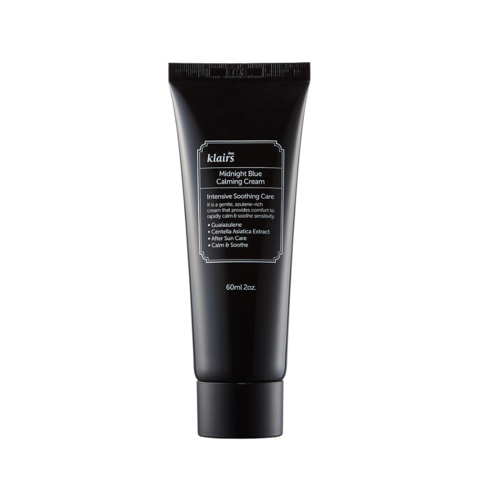

Crema Relajante
Contiene centella asiática, un ingrediente antioxidante que previene la irritación y ayuda a la renovación celular. Esta crema es apta para todo tipo de pieles y puede utilizarse tanto por la mañana como por la noche. Tiene una función calmante y reparadora, por eso se recomienda su uso después de una limpieza facial, de la exposición solar o después del afeitado o depilación.
- Tipo de piel: Todos los tipos de piel
- Beneficios: Crema calmante para piel sensible o irritada.
- Tamaño: 60 ml
- Ingredientes clave: Aqua (Water), Cetyl Ethylhexanoate, Glycerin, Butylene Glycol, Caprylic/Capric Triglyceride, Centella Asiatica Extract, Sorbitan Stearate, Argania Spinosa Kernel Oil.
$94.900